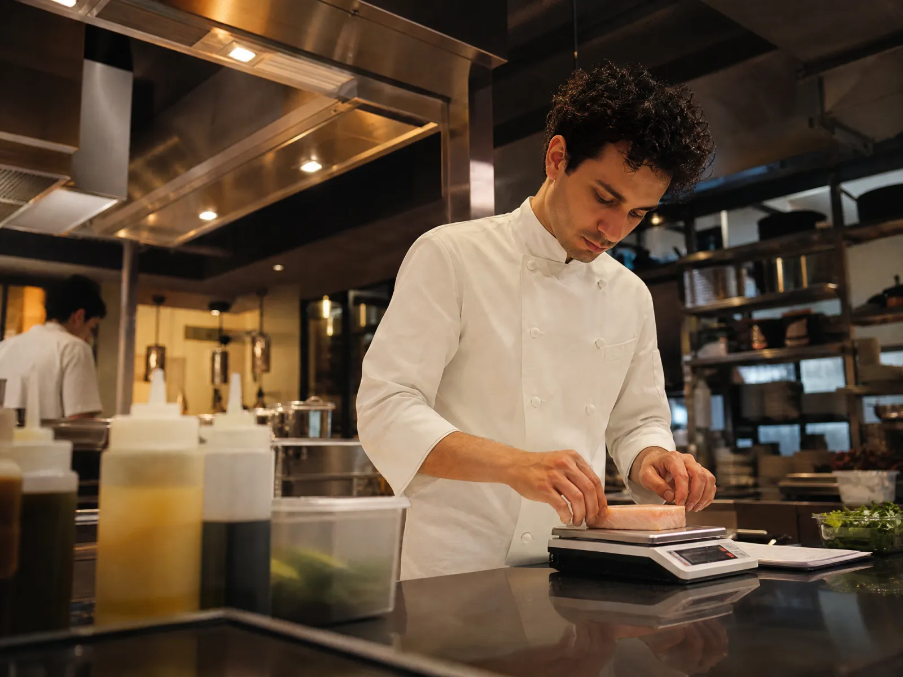

Resposta curta
10 coisas que já dá pra deixar rodando sozinhas, ligando o iFood, o WhatsApp, o PDV e a maquininha que você já usa. As 10: O pedido do WhatsApp cai direto na comanda; Avaliação respondida no mesmo dia; Pedido direto, sem taxa de aplicativo; Cliente que sumiu há 30 dias recebe chamada; O pico organizado antes de travar; CMV e estoque avisando antes de faltar; As vendas de todos os canais somadas; Caixa conferido sozinho; Imposto e contas com lembrete; Funcionário novo treinado pelo WhatsApp.
A verdade antes de tudo
A IA vai ocupar cargos. Vai ter demissão. É melhor você saber antes do seu concorrente.
Quem passa o dia anotando pedido do WhatsApp, conferindo o caixa e respondendo avaliação faz um trabalho que a IA já faz hoje. O restaurante que entender isso primeiro vende mais com a mesma cozinha.
Fonte: Sebrae com Meta, Transformação Digital nos Pequenos Negócios (ago/2026).
Vendendo mais, e o lucro não aparece.
Fontes: Abrasel via ES Hoje, set/2026 · Serasa e DGABC (comissão iFood) · Abrasel, 2.176 donos, 2025 · Abrasel para a 99Food, 1.710 gestores, ago/2026.
iFood num tablet, WhatsApp no celular, PDV no caixa e o CMV na planilha.
Nenhum conversa com o outro. No fim da noite, é você que soma salão, aplicativo, WhatsApp e maquininha.
A Toqan, IA do iFood lançada em set/2026, só lê os dados do próprio iFood. O salão fica de fora até a integração com o PDV sair (GiroNews, set/2026).
As 10 coisas que eu deixaria rodando sozinhas

Pra começar: o básico que já tira trabalho.
O pedido do WhatsApp cai direto na comanda
O assistente lê a mensagem, confirma os itens e o endereço e lança no PDV. A comanda sai impressa na cozinha.
26% do delivery vem pelo WhatsApp, e 62% ainda não têm nada automático lá.
Liga: WhatsApp · Saipos ou Consumer
Avaliação respondida no mesmo dia
O assistente escreve a resposta no tom da casa e você aprova com um toque. Reclamação séria vira alerta na hora.
Os restaurantes respondem só 24% das avaliações.
Liga: Google · Avaliações do iFood
Pedido: direto da conversa pra cozinha.
Pedido direto, sem taxa de aplicativo
Quem já pediu direto recebe no WhatsApp o cardápio próprio com uma vantagem. O pedido cai no PDV sem comissão.
12 a 23% de comissão, mais 3,2% do pagamento online.
Liga: Histórico do PDV · WhatsApp
Cliente que sumiu há 30 dias recebe chamada
O assistente acha quem não pede há 30 dias e manda uma mensagem com o prato que a pessoa mais pede.
Liga: PDV · WhatsApp
Cliente: volta sem pagar taxa.
O pico organizado antes de travar
O assistente mede o tempo de preparo por hora e avisa quando pausar o aplicativo ou aumentar o prazo.
33% não dão conta do salão e do delivery juntos. 35% perdem qualidade no pico.
Liga: Pedidos do iFood · PDV
CMV e estoque avisando antes de faltar
Cada venda baixa a ficha técnica. Se o CMV passar da faixa ou um insumo estiver acabando, chega o aviso.
O Sebrae estima o custo dos alimentos em 25 a 35% das vendas.
Liga: Estoque do PDV · Ficha técnica
Cozinha e estoque: antes de travar.
As vendas de todos os canais somadas
Às 23h você recebe salão, iFood, WhatsApp e maquininha num número só, com o prato campeão do dia.
69% não usam sistema para organizar a operação.
Liga: iFood · PDV · Maquininha
Caixa conferido sozinho
O assistente cruza o que a maquininha diz que vendeu com o que caiu na conta e o que o iFood vai repassar. Diferença vira alerta.
Liga: Conciliação Stone · Financeiro do iFood · Conta Azul
O dinheiro: o caixa fecha sozinho.
Imposto e contas com lembrete
Três dias antes de cada vencimento chega o aviso, com o saldo que vai sobrar.
Mais de um terço tem conta atrasada. 75% desses devem imposto federal.
Liga: Conta Azul ou Bling
Funcionário novo treinado pelo WhatsApp
O funcionário pergunta "como monta o X?" e recebe a ficha técnica e o padrão da casa, na hora.
Liga: Fichas técnicas · Cardápio do PDV
Às 23h, o restaurante inteiro numa mensagem.
Salão, aplicativo, WhatsApp e maquininha somados. Sem abrir tablet, sem somar na calculadora.
Exemplo de mensagem, valores ilustrativos.
Quem escreveu
A Kompila funciona exatamente assim.
Somos uma empresa de implementação de IA pra pequena e média empresa. A própria Kompila roda desse jeito: o dono e a IA, sem funcionário, cuidando de atendimento, vendas, financeiro e conteúdo. A gente monta, liga nos sistemas que você já usa e opera todo mês por você.
Perguntas frequentes
O que a IA já consegue fazer num restaurante?
Hoje já dá pra deixar rodando sozinho: o pedido do whatsapp cai direto na comanda; avaliação respondida no mesmo dia; pedido direto, sem taxa de aplicativo; cliente que sumiu há 30 dias recebe chamada; o pico organizado antes de travar; cmv e estoque avisando antes de faltar; as vendas de todos os canais somadas; caixa conferido sozinho; imposto e contas com lembrete; funcionário novo treinado pelo whatsapp. Tudo ligado aos sistemas que o negócio já usa.
A IA vai substituir funcionário num restaurante?
Quem passa o dia anotando pedido do WhatsApp, conferindo o caixa e respondendo avaliação faz um trabalho que a IA já faz hoje. O restaurante que entender isso primeiro vende mais com a mesma cozinha. Falar disso com honestidade é melhor do que fingir que não vai acontecer.
Preciso trocar os sistemas que eu já uso?
Não. Nenhum conversa com o outro. No fim da noite, é você que soma salão, aplicativo, WhatsApp e maquininha. A ideia é ligar o que já existe, não trocar. A Toqan, IA do iFood lançada em set/2026, só lê os dados do próprio iFood. O salão fica de fora até a integração com o PDV sair (GiroNews, set/2026).
Por onde começar a usar IA num restaurante?
Pela tarefa que mais toma tempo e se repete todo dia. Na maioria dos casos é a primeira da lista: o pedido do whatsapp cai direto na comanda. Uma tarefa rodando sozinha já mostra, em número, quanto tempo volta.
Quanto custa colocar IA no meu restaurante?
Depende do que é montado pro negócio. Na Kompila, o escopo é escrito antes, com data, e a operação fica com a gente no mensal: você não precisa aprender ferramenta nem contratar ninguém.
De onde vêm os números deste guia?
De pesquisas públicas, com o link de cada uma no fim da página: Abrasel via ES Hoje, set/2026 · Serasa e DGABC (comissão iFood) · Abrasel, 2.176 donos, 2025 · Abrasel para a 99Food, 1.710 gestores, ago/2026.
Fontes
- Abrasel/IBGE via GiroNews, faturamento do setor (set/2026).
- Abrasel via ES Hoje, lucro em julho de 2026.
- Serasa, taxas do iFood.
- Abrasel via GiroNews, WhatsApp no delivery (2025).
- Abrasel para a 99Food via Meio & Mensagem (ago/2026).
- Sebrae PR, CMV de restaurante.
- iFood lança a Toqan (GiroNews, set/2026).
- Harmo via Mercado & Consumo, avaliações respondidas (2024).
- Sebrae com Meta, Transformação Digital nos Pequenos Negócios (ago/2026).
- iFood, API para desenvolvedores.
- Stone, API.
- Conta Azul, API.
- Bling, API.
- Google, avaliações pela API.